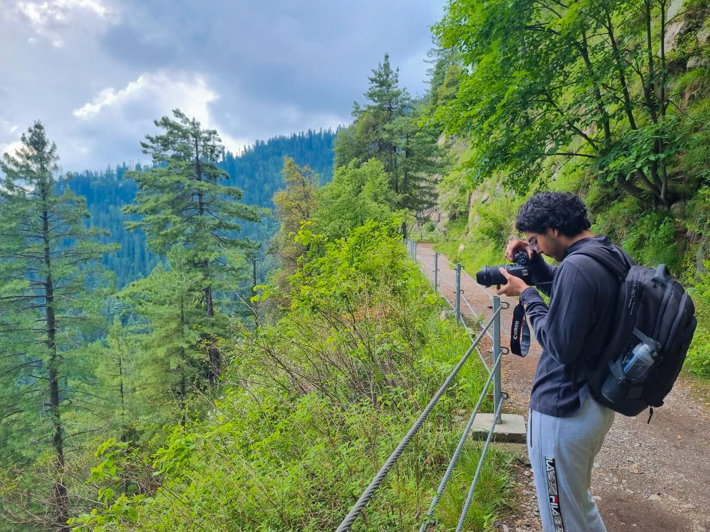

Engineer by training. Photographer by curiosity.

I’m an Automation Engineering student with hands‑on experience in automated manufacturing and technical problem‑solving. Through roles at Mitchelle Plastics and Mobile Climate Control, I’ve developed strong skills in process optimization, quality control, and working within fast‑paced engineering environments. My academic background in automation and chemical engineering, supported by business management training, gives me a balanced perspective that blends technical depth with practical decision‑making. I’ve worked extensively with PLCs, robotics, and automated systems, applying both troubleshooting and system‑level thinking to improve reliability and efficiency. I was previously part of the McMaster Mars Rover Team, contributing to robotics‑focused design and engineering challenges. Outside of engineering, I enjoy photography, which gives me a creative outlet and sharpens my attention to detail. I’m driven by curiosity, continuous improvement, and the desire to build systems that are efficient, reliable, and intuitive.